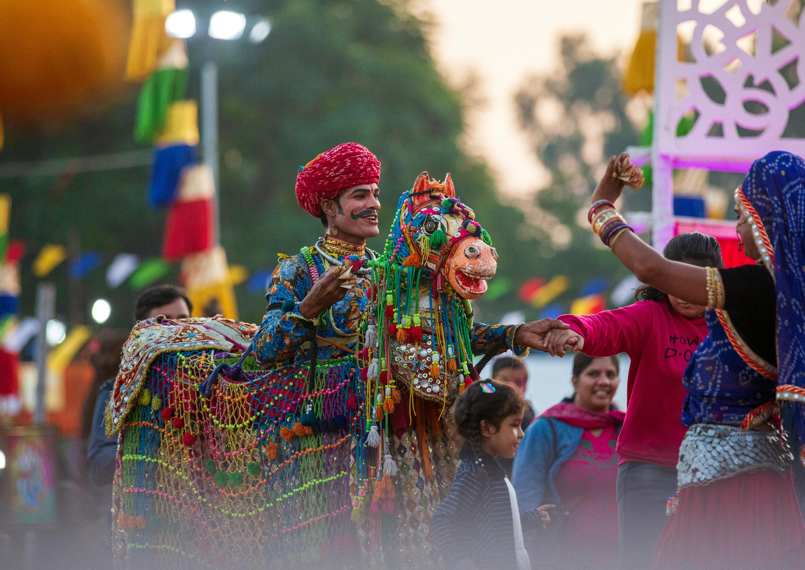
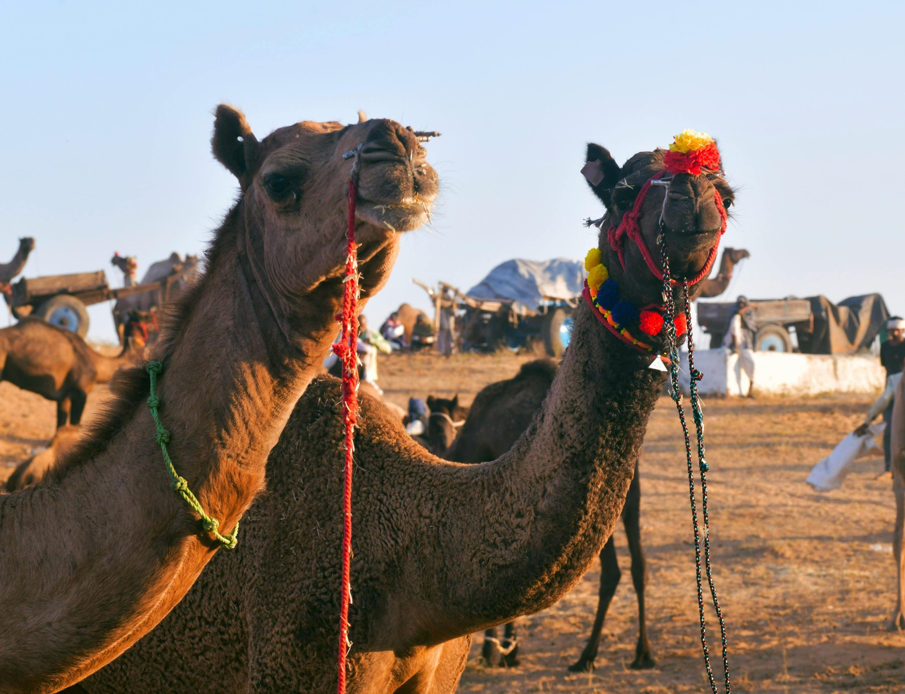
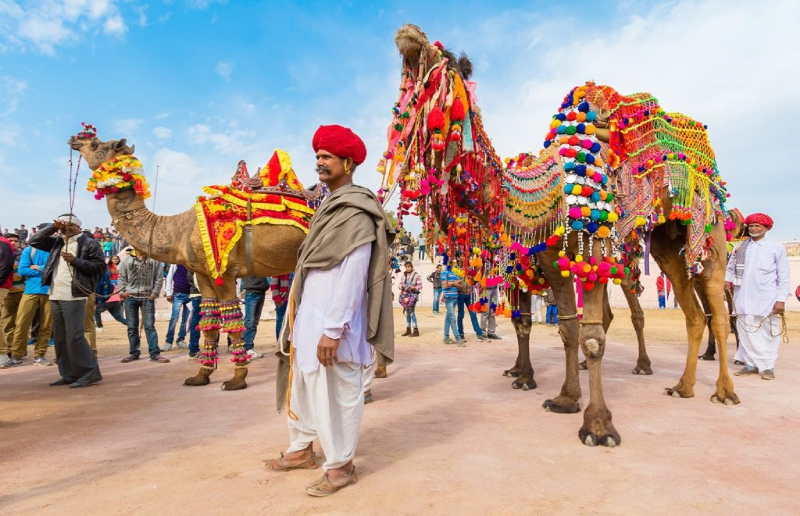
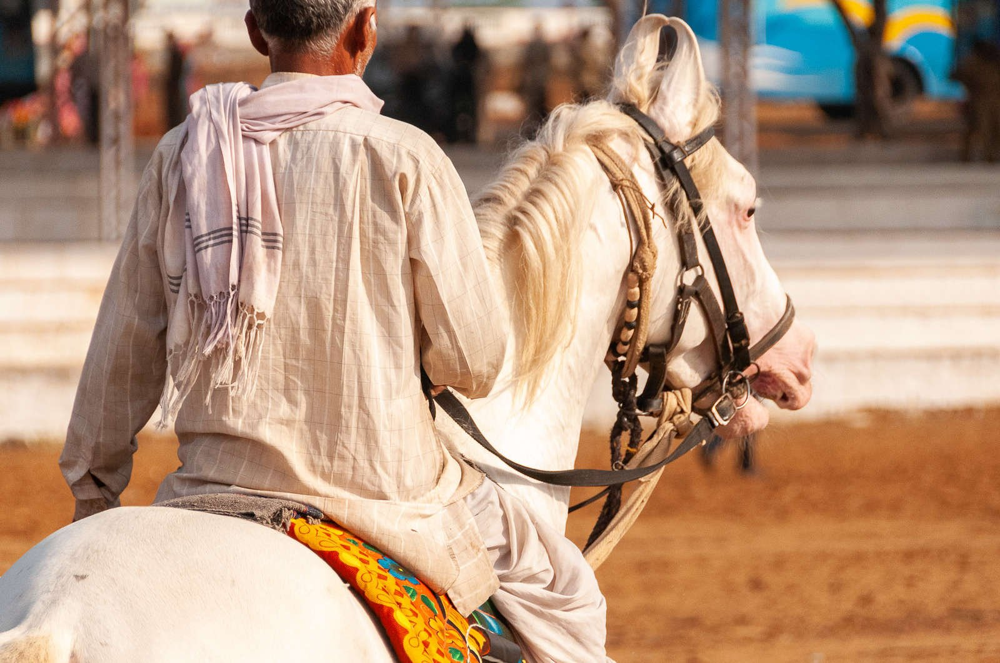
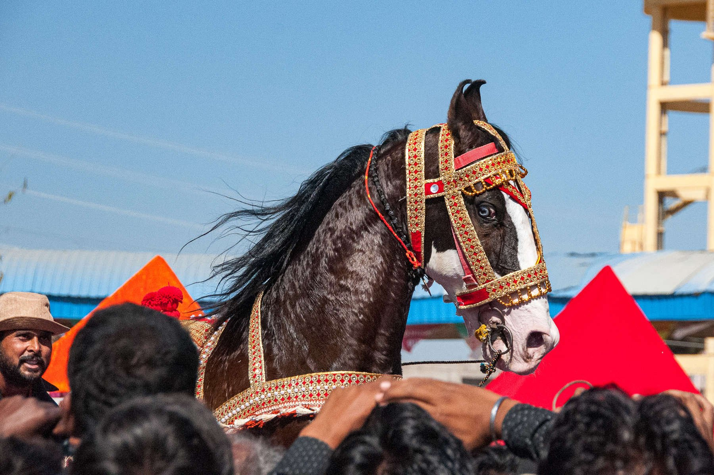

Pushkar Horse & Camel Fair: A Sacred Stage for India’s Marwari Majesty
Every November, in the desert town of Pushkar, Rajasthan, something extraordinary unfolds. What begins as a Hindu pilgrimage tied to the sacred Pushkar Lake transforms into one of the largest and most colourful livestock festivals in the world — and for horse lovers, a rare window into India’s deep-rooted equestrian culture. The Marwari horse, with its arched neck and unmistakable inward-curving ears, moves through it all with the bearing of a creature that knows its own history.
This is not a curated tourism event. It is a living tradition — ancient, layered, and still very much alive — where the sacred and the commercial, the spiritual and the spectacle, exist side by side in the dust and golden light of the Thar Desert.
Where Sand Meets Spirit
Set against the arid beauty of the Thar Desert, the Pushkar Fair (also called Pushkar Mela) is one of India’s most historic animal gatherings. Its origins lie in the convergence of two powerful traditions: spiritual pilgrimage and livestock trade. For centuries, devotees have come to Pushkar to bathe in the sacred lake on Kartik Purnima, a full moon day considered highly auspicious in the Hindu calendar. Over time, this spiritual congregation evolved into a sprawling fairground where desert communities brought their best camels, horses, and cattle to trade, race, and showcase.
Today, the fair brings together traders, breeders, nomads, holy men, and travellers from across India and the world. While camels often take centre stage in the broader fair, it’s the Marwari horses — with their arched necks and signature inward-turning ears — that steal the hearts of equestrians. This isn’t just a marketplace; it’s a living exhibition of Rajasthani pride, horse training, and breed preservation.

The Role of Horses in the Fair
While camels may dominate the numbers, horses carry the cultural weight of the Pushkar Fair. The Marwari horse, a breed synonymous with Rajasthan’s warrior history, takes centre stage in both spiritual ceremonies and competitive showcases. Many devotees bring their horses to be blessed at the lake, tying the animal into the sacred atmosphere of the pilgrimage.
Horses are also integral to the fair’s most dynamic spectacles:
- Horse dance performances — trained Marwaris perform rhythmic footwork to the beat of traditional drums
- Breed competitions — judged on conformation, agility, and demeanour
- Traditional parade processions — horses adorned with intricate bridles, embroidery, and mirrored accessories
These events aren’t just for entertainment — they’re a showcase of heritage and prestige. Winning breeders gain recognition not only in Pushkar, but across the subcontinent.
Pushkar Fair — At a Glance
- Location: Pushkar, Rajasthan, India
- When: November, timed to Kartik Purnima (Hindu full moon festival)
- Duration: Approximately 8–10 days
- Star breed: The Marwari horse — known for its inward-curving ears and warrior heritage
- Scale: Tens of thousands of animals; hundreds of thousands of visitors
- Highlights: Horse dance, breed competitions, camel races, folk performances, lakeside ceremonies
- For equestrians: One of the few places in the world to see working Marwaris in their cultural context
“In a world of fast-paced equestrian sport and digital showrooms, the Pushkar Horse Fair reminds us of the sacred, timeless bond between horse and human — set not in arenas, but under desert stars.”

Cultural Convergence
More than a horse fair, Pushkar is a cultural kaleidoscope. The grounds are alive with:
- Folk dancers in mirror-studded lehengas twirling under desert skies
- Musicians serenading crowds with sarangi and dholak
- Competitions ranging from the longest moustache to turban tying
- Nomadic groups, saints, and saddle-makers filling an open-air bazaar of heritage
For a horse traveller, it’s a chance to go beyond the stables and into the heart of Rajasthani tradition. The sounds, the colours, the dust rising from the horse rings — it is the kind of sensory experience that travel writing rarely does justice to.

A Story-Worthy Pilgrimage
Attending the Pushkar Fair isn’t just about admiring horses — it’s about stepping into a world where animals, commerce, faith, and art collide. Whether you come with a camera, a notebook, or a dream of owning a Marwari, Pushkar offers an unforgettable experience.
The Marwari horse itself deserves its own study. Descended from native Indian breeds crossed with Arabian stock, it was the preferred mount of Rajput warriors for centuries — prized for its courage, endurance, and the near-mythic loyalty it showed on the battlefield. At Pushkar, that history is present in every animal led into the ring. You can see it in the way they carry themselves, in the pride of their handlers, and in the reverence of the crowd.
In a world of fast-paced equestrian sport and digital showrooms, the Pushkar Horse Fair reminds us of the sacred, timeless bond between horse and human — set not in arenas, but under desert stars.

Related Stories

Escaramuza: Women, Horses, and Tradition in Mexico’s Arena
Set to music and performed at full gallop, Escaramuza brings eight riders into the arena as a single unit. Riding sidesaddle, they move through crossing lines and sweeping turns with precision and control.

Lords of the Southern Plains: The Rise and Fall of the Comanche Horse Nation
For the Comanche, the horse was not a means of travel but the foundation of warfare, survival, and an empire that reshaped the balance of power across a continent.

The Andalusian Horse: Spain’s Noble Soul
For centuries, the Andalusian shaped empires, warfare, and the very idea of the noble horse. This article traces its journey from Iberian war horse to the foundation of modern dressage.